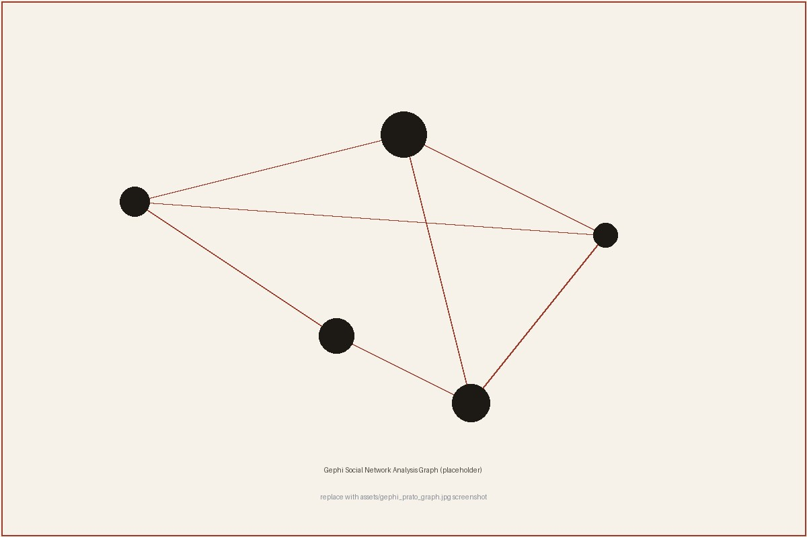

Jacopo
Peracchio
I investigate hybrid threats, organized crime and illicit networks with reproducible pipelines built entirely from open sources — every claim traceable, every dataset auditable.
Nothing on this page is classified — hover the bars to verify.

Hover to unredact
§ 01
Research Programmes
Four standing lines of work where social theory meets measurable, reproducible evidence. Hover a box to unseal its scope.
HT-01
Hybrid Threats
Influence operations, coordinated inauthentic behaviour, astroturfing and disinformation dynamics — measured against verifiable open-source traces.
OC-02
Organized Crime
Social network analysis of illicit ecosystems, money-laundering typologies and transnational flows — grounded in field-tested methods from the Prato district study.
TAG-03
Terrorism & Armed Groups
Mobilisation dynamics, radicalisation pathways and network structures of armed organisations.
SOO-04
Social Organisation Online
How online collectives organise, signal and mobilise: synthetic influence networks and community self-regulation across diasporic spaces.
§ 02
Method & Tradecraft
Mixed-methods tradecraft: ethnographic fieldwork and qualitative interviewing combined with computational analysis — developed on a live case study of transnational organised crime in the Prato industrial district (MA thesis, 110/110 cum laude) and applied since in OSINT collection and analysis pipelines.
Web scraping & data pipelines (Python)
Social network analysis (Gephi, ForceAtlas2, PageRank, modularity)
Machine learning & regression (R, Cook's distance, Breusch-Pagan)
OSINT: dorking, court records, Wayback Machine, digital footprint
Qualitative: ethnography, key-informant interviews
LLM multi-agent systems & sociological theory
Local-first & privacy-preserving AI orchestration
Source evaluation
Admiralty-style reliability and credibility ratings applied to every source before it enters a dataset.
Chain of custody
Provenance tracked from collection to final product — every figure traces back to its origin.
Reproducibility
Pipelines are versioned, tested and CI-checked. Results are re-runnable, not screenshots.
Privacy by design
Public sources only. Collection and storage are GDPR-aware and local-first where it matters.
Core stack
- Python
- R
- Gephi / networkx
- pandas
- SQLite
- Web scraping
- OSINT
- SNA
- Machine learning
- LLM agents
- Docker
- GitHub Actions
§ 03
Tools & Analytic Products
Built for real collection and analysis work — documented, tested, and running on hardware you control.
-
Tool · CLI
TallyHo
Italian electoral time series from 1946 to today, municipality by municipality, straight from ministerial open data. Python CLI exporting CSV/JSON/XLSX/Parquet.
-
Engine
Arachne-Scholar
Local-first knowledge-graph engine for academic literature: PDF ingestion, SVO dependency parsing, network metrics, OCR. Runs fully offline on your own hardware.
-
Research code
hybrid-kg-paper
Experiments in hybrid knowledge-graph construction: deterministic NLP backbone with LLM enrichment. Reproducibility GED 0.0.
-
MA thesis
Economic Networks and Illicit Practices in the Prato District
Sociological analysis of the Chinese presence in Prato between mafia-type infiltration and community self-regulation — fieldwork and network analysis on a live case.
§ 04
Education
2023–2026
Università degli Studi di Torino
MA in Sociology and Social Research
110/110 cum laude — thesis on illicit economic networks in the Prato district (full entry under Analytic products).
2025
Università degli Studi di Torino, Future Scenarios Lab
Certificate, Apr–Jun 2025
Frameworks for future-scenario analysis: which factors and events correlate and show causal links with a phenomenon in its future development. Skills: information analysis, risk management.
2025
Università degli Studi di Torino, Algorithms & Society Lab
Certificate, Feb–Apr 2025
2019–2023
Università degli Studi di Firenze
BA in Political Science
103/110 — thesis: “New Technologies, Old Inequalities: a Critical Analysis of Digital Human Resources”.
§ 05
Languages
Italian
Native
English
B2 · CEFR
Spanish
B1 · CEFR
Chinese
A2 · CEFR
Public work is written in English; fieldwork is conducted in Italian.